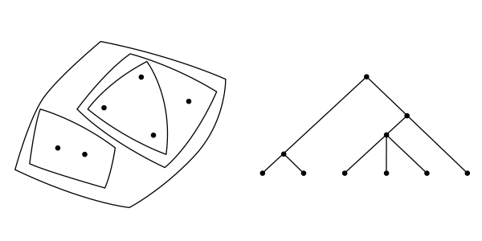
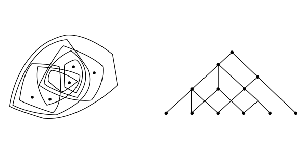

seis ensaios sobre a complexidade
As cidades
Trabalho Final de Graduação
Faculdade de Arquitetura e Urbanismo
Universidade de São Paulo
Aluno: Georges Boris
Orientador: Artur Rozestraten
São Paulo
2012
As cidades
Em 1966, Christopher Alexander publicou um artigo que levava o titulo de “The city is not a tree”. Nele, discutia a idéia de que as cidades naturais, isto é, aquelas que não tiveram seu crescimento regrado por algum projeto inicial, poderiam ser descritas na forma de uma estrutura abstrata chamada semitrama, já as cidades artificiais, aquelas que tiveram seus crescimentos seguindo alguma linha de projeto anterior, poderiam ser descritas na forma de uma outra estrutura abstrata chamada árvore.
Ambas essas estruturas se tratam de sistemas de conjuntos, ou seja, modos de organizar conjuntos e a forma com que eles se relacionam entre si. No caso das cidades utilizado por Alexander, esses conjuntos representam as relações entre elementos da vida urbana como, por exemplo, a localização das unidades habitacionais e das unidades comerciais, os moradores de uma determinada região e o hospital que os atende, uma área de lazer e sua zona de influência.
à cima : representações de uma estrutura em árvore.
A estrutura em árvore se caracteriza principalmente pela sua linearidade, ou seja, um conjunto de habitantes pode ser organizado como uma família, que por sua vez pode ser agrupada com outras famílias formando uma vizinhança. Essa vizinhança é atendida por um centro comercial, uma área de lazer, um hospital. Quando representada graficamente, substituindo esses elementos por pontos e suas relações por retas, essa estrutura se assemelha a uma árvore, por isso seu nome.
As cidades artificiais, em seus diversos exemplos citados por Alexander, se conformam dessa maneira, formando núcleos, módulos urbanos, que funcionam de maneira linear. Há de se admitir que alguns projetos possuem tal estrutura desenhada de maneira mais óbvia que outros, mas todos acabam por se organizar de uma forma modular. Essa modularidade representa a falta de sobreposição entre os conjuntos de tal estrutura, uma segmentação de suas funções que não existe na realidade. No seu pragmatismo, o projeto da cidade artificial ignora a complexidade iminente da vida urbana e, por esse motivo, falha.
à cima : representações de uma estrutura em semitrama.
A estrutura em semitrama, por sua vez, se representada por pontos e retas da mesma maneira descrita antes, se pareceria mais como uma malha, onde um ponto se relaciona com outros sem que haja uma hierarquia tão nitidamente definida. Essa enorme diferença na forma final da estrutura em semitrama é caracterizada pela simples admissão de sobreposições entre os seus conjuntos.
Se utilizássemos como elementos de uma estrutura em semitrama os mesmos que elencamos antes, significaria que uma família pertencente a determinada vizinhança não mais utilizaria, necessariamente, o hospital daquele módulo espacial, e os filhos dos habitantes daquela região não, necessariamente, estudariam na escola local e teriam como amigos pessoas de seu mesmo círculo social. As relações entre os elementos desse meio urbano se dariam de maneira mais complexa e não tão nítida espacialmente. Ao analisarmos uma cidade natural notamos que sua estrutura não segue uma lógica tão clara como aquela das cidades artificiais. Uma escola, por exemplo, se instalada num local inadequado, fecharia pela sua não utilização e outro equipamento urbano que pudesse ser mais adequado àquele espaço se instalaria ali. Dessa forma, numa experimentação contínua, a cidade se moldaria em uma organização complexa que supriria de maneira adequada às necessidades dos seus habitantes.
No entanto, a principal questão nessa análise, seria por qual motivo existe essa divergência tão nítida entre as organizações espaciais de cidades projetadas pelo homem e cidades que se desenvolveram naturalmente. A resposta se deve muito mais ao nosso modo de abstrairmos aquilo que observamos do que à nossa capacidade de projeto.
Temos uma dificuldade intrínseca à nossa natureza em pensarmos em conjuntos sobrepostos. Se tentarmos memorizar, como exemplifica Alexander, uma bola de tênis, uma laranja, uma bola de futebol americano e uma melancia, o faremos por agruparmos os objetos em conjuntos semelhantes. Alguns agrupariam os objetos em frutas e bolas de esporte, outros, que teriam uma predisposição maior a priorizar características formais, agrupariam a bola de tênis com a laranja e a melancia com a bola de futebol americano, alguns até notariam a possibilidade dos dois agrupamentos. Qualquer um dos grupos, se tomados sozinhos, é uma estrutura em árvore. A sobreposição dos dois grupos, no entanto, é uma estrutura em semitrama.
Ao tentarmos visualizar esses grupos, temos facilidade em conceber cada um dos agrupamentos citados. Podemos até mudar rapidamente o tipo de agrupamento que escolhemos, fazendo com que acreditemos que visualizamos os dois grupos ao mesmo tempo. Porém, não conseguimos de fato formar essa imagem na nossa imaginação pois essa resultante contêm sobreposições entre os dois grupos.
Podemos induzir, pelo exemplo anterior, que não conseguimos, também, visualizar relações que contêm sobreposição quando pensamos no funcionamento de uma cidade. Entendemos a interação de um elemento com o outro, porém as múltiplas interações que ocorrem simultaneamente entre os elementos nos são de difícil compreensão. O que fazemos, então, é a organização daquelas interações de maneiras que nos são inteligíveis, transformando, na nossa imaginação, uma estrutura complexa, uma estrutura em semitrama, em uma estrutura simples e linear, uma estrutura em árvore. Quando fazemos isso estamos abstraindo o problema à nossa frente e, para entendê-lo, transformando-o em algo que não é.
Não seriam, então, as cidades artificiais, nada mais que a materialização do nosso entendimento deturbado do funcionamento das cidades naturais? Ao projetar suas organizações urbanas, o homem desenharia não aquelas situações encontradas nas cidades que admira, mas apenas suas abstrações, lineares, simplificadas, hierarquizadas, e, sobretudo, distorcidas.